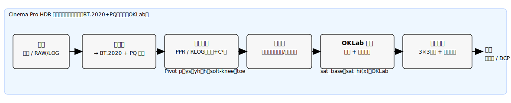
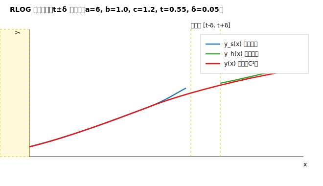
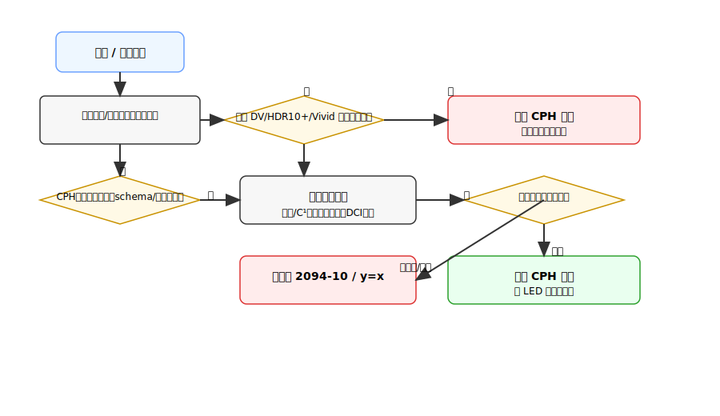
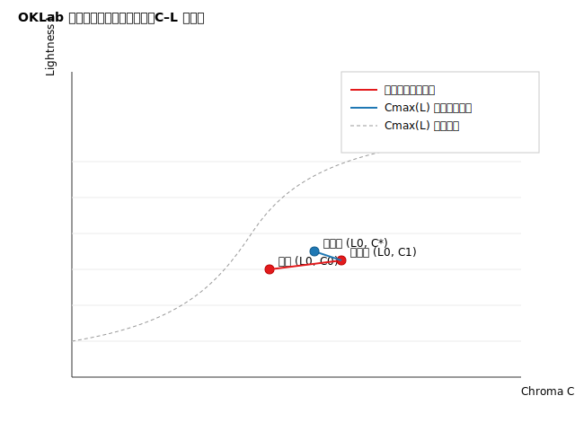
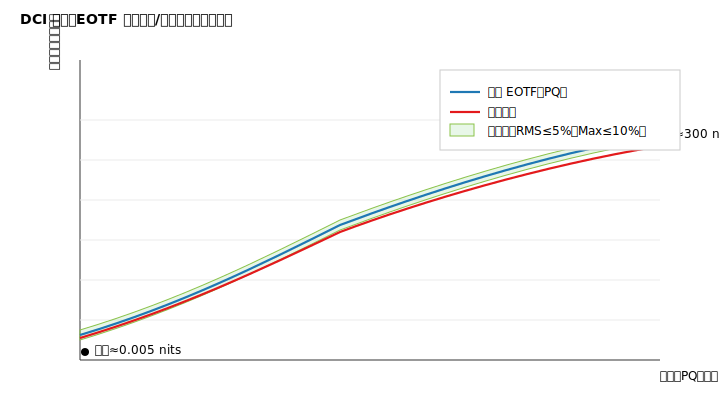
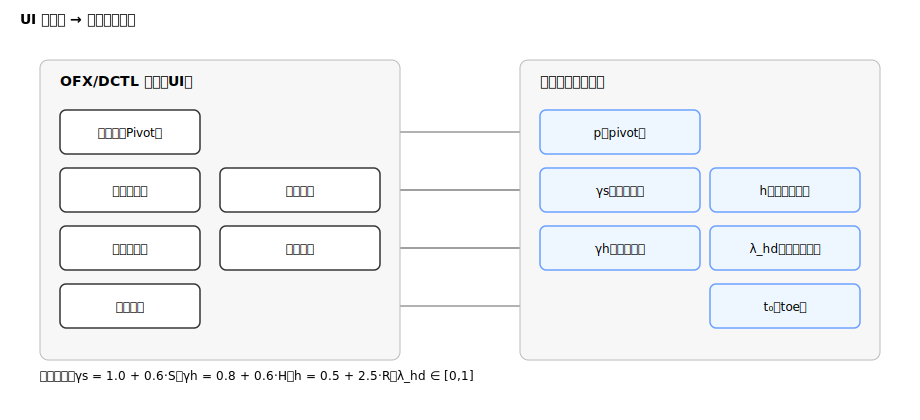

Cinema Pro HDR v0.2 发明技术披露书
目录
1. 技术领域与背景
本发明涉及电影级 HDR（高动态范围）色调映射与色彩管理，尤其是一种兼容 ST 2094-10 基础层、并通过原创解析曲线（PPR/RLOG）+ 分层细节/饱和实现创作意图可控与放映端可适配的动态映射方法、装置、存储介质及其元数据封装。
痛点：
- 既有生态（Dolby Vision/HDR10+/HDR Vivid）在影院/放映端的可用性、兼容性与授权复杂度不一；
- 传统 Sigmoid/Bezier/样条式映射在参数可解释性、单调性/C¹ 保障、闪烁抑制方面存在工程隐患；
- 导演意图跨终端复现缺乏参数化/可审计的基线与扩展机制。
2. 发明目的与技术问题
目的：在不破坏现有生态的前提下，提供一种基础层完全兼容 ST 2094-10、扩展层采用原创曲线族（PPR/RLOG）并具有分层细节增强与感知饱和控制的动态映射方案；在设备不支持/风险检测时自动回退，在支持时实现创作意图的参数化还原与设备适配。
解决的问题：
- 曲线可解释与创作参数 → 数学参数的一一对应；
- 单调 + C¹ 可证明与可检测，降低条带/闪烁；
- 高光细节与OKLab 分层饱和的稳定增强；
- 双层元数据（2094-10 基础 + CPH 扩展）与回退状态机，避免二次映射；
- DCI 合规与色域越界的工程化检查与报告能力。
3. 符号约定与工作域
-
输入亮度标量：（PQ 归一域；ST 2084 归一后 0=黑，1=峰值）。
-
输出亮度标量：（同域）。
-
中灰枢轴：，建议默认 。
-
典型参数域：
- （暗部幂指数）
- （高光幂指数）
- （高光肩部压缩）
- （增益，常数）
-
C¹ 平滑窗（用于段间混合）：
4. 核心技术方案
4.1 CPH-PPR（默认曲线）
思想：以中灰枢轴为支点，暗部用幂型控制对比，高光用有理式自然收肩，采用 C¹ 平滑窗在枢轴邻域混合，整体单调且C¹ 连续。
分段与混合：
- 暗部幂段（）：
- 高光有理段（）：
- 过渡权重（中心 ，半宽 ）：
- 全域输出：
单调性（充分条件）：
-
暗部导数：
-
高光导数：
进而 保单调（）。
-
因 且 单调增，左右段各自单调时，混合亦单调（工程上以4096 采样验证）。
C¹ 连续性（实操验证准则）：在 进行左右差分导数估计，阈值 判定通过。
4.2 CPH-RLOG（备选曲线）
思想：暗部采用对数以提升低亮度控制，高光采用有理式稳态压肩，在阈值 邻域以 C¹ 平滑窗拼接。
- 暗部对数段：
- 高光有理段：
- 阈值拼接（宽度 ）：
单调性：
4.3 软膝与黑位 toe（防炸峰/发灰）
-
软膝（Soft-Knee）：
-
黑位 toe：
两者均为 C¹ 可微且保持单调。
4.4 OKLab 分层饱和与两级色域回扣
流程：线性 RGB → XYZ（标准矩阵）→ OKLab。
- 全局饱和：
- 亮区饱和：，其中
回到 RGB 后执行两级色域回扣：
-
一级线性压制（3×3 映射至目标原色三角形）：
-
二级感知夹持（OKLab 半径缩放）：
- 令 ，色度半径
- 若超出上界 ，缩放：
- 逆变换至 RGB。记录越界占比与worst-10 样本坐标。
4.5 回退状态机（兼容/安全执行）
核心原则：检测到他家动态映射或任何不确定风险 → 禁用扩展/回退，绝不二次映射。
if Detect(DV | HDR10+ | Vivid active) -> DISABLE(CPH_exec) // 禁止叠加
else if !Support(CPH_ext) or SidecarMissing or SchemaError -> USE(ST2094-10_baseline)
else if !Monotonic || !C1 || Flicker>th || Perf>budget || DCI_fail -> DEGRADE_or_FALLBACK()
else -> ENABLE(CPH_exec_with_LED_adaptation)
- ENABLE时允许LED 自适配（按峰值/黑位微调 shoulder/black_lift/sat_hi），仍保证单调+C¹。
- FALLBACK路径：仅基础层（2094-10）或
y=x硬回退（异常时）。
5. 元数据与封装（基础层 + 扩展层）
基础层：ST 2094-10 常用统计与显示目标参数（可被现有生态读取）。 扩展层：CPH 参数块（版本、曲线类型与参数、工作域、时间码/GUID 等）。
侧车 JSON 示例（可等效封装至 SEI 或 ISOBMFF 私有 box）：
{
"$schema": "https://json-schema.org/draft/2020-12/schema",
"st2094_10": {
"minPqEncodedMaxRGB": 12,
"avgPqEncodedMaxRGB": 280,
"maxPqEncodedMaxRGB": 900
},
"cph_meta": {
"cph_version": 2,
"cph_curve_id": 0, // 0=PPR, 1=RLOG
"pivot": 0.18,
"gamma_s": 1.25,
"gamma_h": 1.10,
"shoulder": 1.5,
"black_lift": 0.005,
"highlight_detail": 0.6,
"sat_base": 1.0,
"sat_hi": 0.95,
"work_cs": "BT2020_PQ",
"hash_clip_guid": "uuid-v4",
"timecode_inout": "01:00:00:00-01:00:12:12"
}
}
版本与回退：cph_version 不被识别或字段越界 → 记录错误码并回退基础层。
6. 实施例与工程实现要点
- GPU 实现：逐像素 O(1)，用权重混合替代分支；FP16 计算 + FP32 累加；确定性模式下禁用 FMA 合并（编译开关记录）。
- 导数开销（便于优化）：
- 统计与频域分析：实时计算 min/avg/max PqMaxRGB；闪烁检测（1–6Hz）可异步执行或离线验证。
- DCI 合规模式：P3-D65 限域，白点≈300 nits、黑位≈0.005 nits、EOTF=PQ 信令检查；超界自动保守化或回退。
7. 技术效果与可验证指标（有益效果）
以下指标作为验收口径与可审计证据（SLA）。
-
单调 & C¹ 连续性
- 4096 均匀采样 + 枢轴邻域 256 重点点；左右差分导数阈值 < 1e-3。
-
亮度/EOTF 跟踪
- PQ 归一域 ：RMS ≤ 5%、最大 ≤ 10%；
- 软膝后过曝像素占比 ≤ 0.5%。
-
色差（LUT 近似）
- P3-D65：ΔE00 均值 ≤ 0.5；P99 ≤ 1.0；最大 ≤ 2.0（输出 worst-10 样本）。
-
抗闪烁（时间稳定）
- 帧差 RMS：不高于参考流程 110%；
- 1–6 Hz 频段能量开启细节后不得上升 > 20%。
-
性能
- 4K24 < 1.0 ms/帧、8K24 < 3.5 ms/帧；统计方法：预热 100 帧，计 3000 帧，取中位/P95。
-
色域与合规
- 越界占比 ≤ 0.2%；列举 worst-10；
- DCI 模式：白点/黑位与 EOTF 信令通过；失败非 0 退出码并输出定位报告。
8. 与现有技术对比（新颖性/创造性要点）
-
曲线构型差异
- 本发明采用幂 + 有理/对数 + C¹ 平滑窗的解析组合（PPR/RLOG），区别于 Sigmoid（ST 2094-10）、Bezier（HDR10+）、分段样条（Vivid）。
-
C¹ 与单调可证性
- 提供导数解析式与工程级验证准则（4096 采样 + 枢轴邻域差分），降低条带/闪烁风险，优于统计生成式曲线的不确定性。
-
分层饱和 + 两级回扣
- 在 OKLab 实施亮区独立饱和控制与半径夹持，结合3×3 线性压制，兼顾“电影味道”与影院色容积边界。
-
双层元数据 + 回退状态机
- 基础层完全兼容 2094-10；扩展层参数化且遇到 DV/HDR10+/Vivid 或异常自动回退，避免二次色调映射，工程可用性强。
-
DCI 合规工具化
- 将白点/黑位/EOTF/色域边界检查工具化与报告化，增强可审查/可追溯能力。
9. 权利要求书草案要点
独立权 1（方法） 一种电影 HDR 动态映射方法，包括：
- 在 PQ 归一域对输入亮度 进行映射；
- 基于枢轴幂段与高光有理段构造目标曲线，并在枢轴邻域以 C¹ 平滑窗混合得到输出 ，所述输出满足单调与 C¹ 连续；
- 在输出端对 施加软膝与黑位 toe；
- 在 OKLab 域执行分层饱和度调制并实施两级色域回扣；
- 通过双层元数据（ST 2094-10 基础层与扩展层参数）进行传输与回退控制，其中回退状态机在检测到外部动态映射激活、参数越界、单调/C¹ 失败、闪烁/性能/合规失败时禁用扩展或回退。
独立权 2（装置/系统） ……（包含处理器、存储器与接口；内置回退状态机与参数适配模块）
独立权 3（存储介质） ……（存储可执行程序，执行权 1 所述方法步骤）
从属权要点（可选）
- PPR/RLOG 具体数学式与参数域；
- 平滑窗采用
smoothstep； - DCI 合规模式（P3-D65 限域 + 软膝/toe 策略）；
- 侧车 JSON 字段/版本与 SEI/私有 box 等等效承载；
- 详细回退条件集合与优先级。
10. 附图清单与出图说明
建议统一坐标 0–1，标注默认参数与关键点（p、Δ、t、δ、y_k、α、t_0）。流程图用菱形判定节点与回退终端。
- fig01_system_pipeline.svg —— 系统框图：输入 → BT.2020+PQ → 曲线（PPR/RLOG）→ 细节层 → OKLab 饱和 → 色域回扣 → 输出。

- fig02_ppr_curve_and_derivative.svg —— PPR 的 与 ；标注 。
 3. fig03_rlog_blend.svg —— RLOG 在 的权重曲线与两段曲线拼接示意。
3. fig03_rlog_blend.svg —— RLOG 在 的权重曲线与两段曲线拼接示意。
 4. fig04_fallback_state_machine.svg —— 回退/启用判定流程：检测 DV/HDR10+/Vivid、schema、单调/C¹、闪烁/性能/合规门。
 5. fig05_oklab_saturation_and_gamut_clamp.svg —— OKLab 分层饱和与半径夹持（C–L 平面）示意。
 6. fig06_dci_compliance_tracking.svg —— DCI 模式白点/黑位与 EOTF 跟踪容差带示意。
 7. fig07_ui_knob_mapping.svg —— “五旋钮 → 参数”映射关系图：Pivot、Shadows/Highlight、Roll-off、Detail、Black Lift → (p,\gamma_s,\gamma_h,h,\lambda_{hd},t_0)。

11. 名词表与默认参数
-
PPR：Pivoted Power–Rational；RLOG：Rational–Logarithmic
-
Pivot (p)：默认
-
参数推荐域：
- 软膝：
- toe：
- RLOG：
12. 文档与交付物命名建议
- 披露书主文档：
Cinema_Pro_HDR_发明技术披露书.md - 附图目录：
fig01_system_pipeline.svg ... fig07_ui_knob_mapping.svg - 数学附录（可转 PDF 提交）：
CPH_v0.2_MathAppendix.md（含导数与证明细节） - Schema：
cph.schema.json（与产品线一致，版本常量 cph_version=2）
附：侧车 JSON Schema 片段
{
"$id": "https://example.com/cph.schema.json",
"$schema": "https://json-schema.org/draft/2020-12/schema",
"title": "Cinema Pro HDR Sidecar",
"type": "object",
"required": ["st2094_10", "cph_meta"],
"properties": {
"st2094_10": {
"type": "object",
"required": ["minPqEncodedMaxRGB","avgPqEncodedMaxRGB","maxPqEncodedMaxRGB"],
"properties": {
"minPqEncodedMaxRGB": {"type":"number","minimum":0,"maximum":10000},
"avgPqEncodedMaxRGB": {"type":"number","minimum":0,"maximum":10000},
"maxPqEncodedMaxRGB": {"type":"number","minimum":0,"maximum":10000}
},
"additionalProperties": false
},
"cph_meta": {
"type": "object",
"required": ["cph_version","cph_curve_id","pivot","work_cs"],
"properties": {
"cph_version": {"type":"integer","minimum":2,"maximum":2},
"cph_curve_id": {"type":"integer","enum":[0,1]},
"pivot": {"type":"number","minimum":0.05,"maximum":0.30},
"gamma_s": {"type":"number","minimum":1.0,"maximum":1.6},
"gamma_h": {"type":"number","minimum":0.8,"maximum":1.4},
"shoulder": {"type":"number","minimum":0.5,"maximum":3.0},
"black_lift": {"type":"number","minimum":0.0,"maximum":0.02},
"highlight_detail": {"type":"number","minimum":0.0,"maximum":1.0},
"sat_base": {"type":"number","minimum":0.0,"maximum":2.0},
"sat_hi": {"type":"number","minimum":0.0,"maximum":2.0},
"work_cs": {"type":"string","enum":["BT2020_PQ"]},
"hash_clip_guid": {"type":"string","format":"uuid"},
"timecode_inout": {
"type":"string",
"pattern":"^[0-2][0-9]:[0-5][0-9]:[0-5][0-9]:[0-5][0-9]-[0-2][0-9]:[0-5][0-9]:[0-5][0-9]:[0-5][0-9]$"
},
"generator": {"type":"string"}
},
"additionalProperties": false
}
},
"additionalProperties": false
}